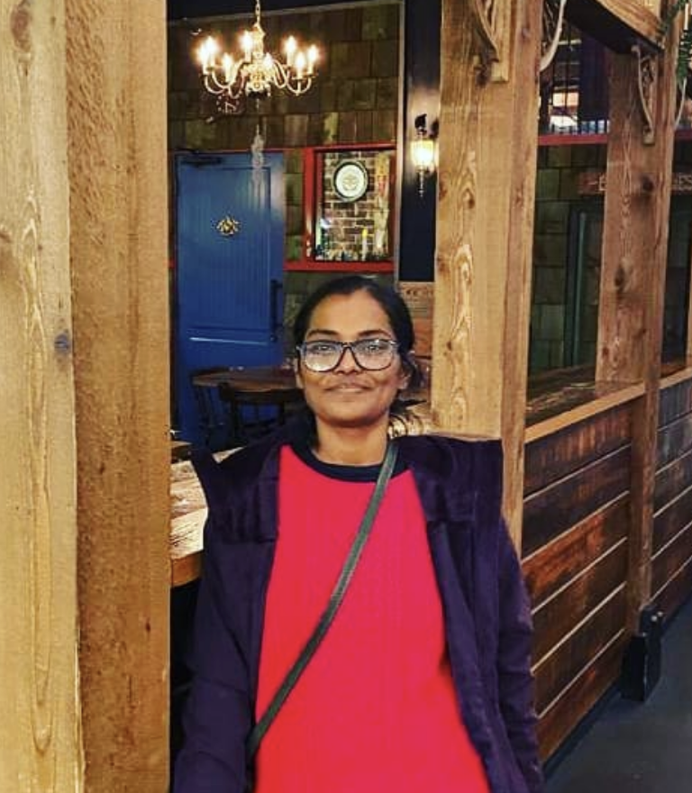

Krishna Priya Muthu
Business Analyst
contact

Summary
Education
Master of Science in Supply Chain, State University of New York, Buffalo
Bachelor of Engineering, Bangalore Institute of Technology
Skills
Requirement Elicitation
SDLC, STLC, Handling change request, Writing Test Scenarios+cases, User stories
SQL
Jira Classic, Jira Align, Azure ticketing system, TFS
Web Development (HTML, CSS, SQL, In progress)
Microsoft Suite
Certifications
Certified Scrum Master (CSM)
Microsoft Azure
SQL
Systems Analysis and Design (In Progress)
Web Development (In progress)
Work Experience
United Airlines
- Designation: Technical Business analyst
- Responsibilities
Directv + At&t
- Designation: Business analyst/Product Owner
- Responsibilities
Colsh Consultancy
- Designation: Business analyst
- Responsibilities
Envirosafe Production Center
- Designation: Supply Chain Analyst
- Responsibilities
University at Buffalo
- Designation: supply Chain Analyst
- Responsibilities
Secon Pvt Ltd
- Designation: supply Chain Analyst
- Responsibilities
Other
© Krishna Priya Muthu. All rights reserved.